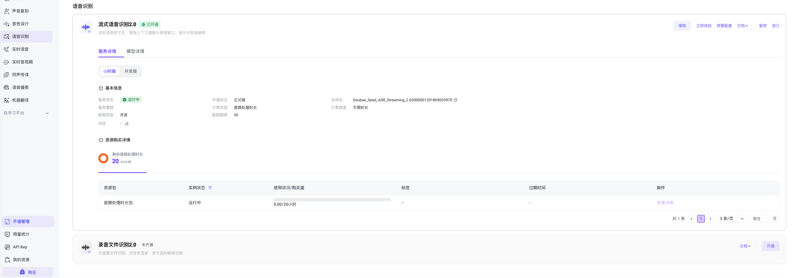
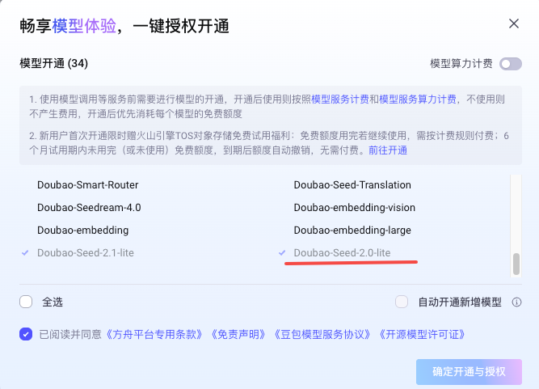

OpenLess 听写配置帮助
在 Ulanzi Studio 选中听写按键，在属性栏的「语音转文字」中选择服务商。使用火山引擎时，豆包语音负责把录音转成文字，火山方舟负责整理标点和断句，两项服务分别配置密钥。
火山引擎
1. 开通豆包语音识别
在豆包语音控制台进入「开通管理」，找到「语音识别」下的流式语音识别2.0。打开「服务详情」，选择小时版，确认服务状态显示「运行中」。同页的「录音文件识别2.0」是另一项服务。

在开通该服务的项目中创建语音密钥，回到插件属性栏，点「豆包语音 · 语音识别」旁的「配置密钥」并保存。打开豆包语音密钥管理 ↗
2. 开通火山方舟文字润色
在北京区火山方舟进入模型开通页面，在列表中选择左列的 Doubao-Seed-2.1-lite。勾选模型，阅读并同意服务条款后，点「确定开通与授权」。默认优先调用 doubao-seed-2-1-lite-260915。若方舟返回 403 或 404，插件会尝试图中红线标出的 2.0 Lite。

创建有权调用该模型的方舟密钥，回到插件属性栏，在「火山方舟 · 文字润色」一行保存。打开北京区方舟密钥管理 ↗
3. 试说一句
将光标放在文本编辑器中。默认按一下设备键开始，说「明天下午三点开会请带上笔记本」，再按一下结束。如果按键设置为「按住听写」，则按住说话、松开结束。两把密钥均配置后，可在光标处查看整理后的文字；仅配置语音密钥时，插件会输入转写原文。
录音时按一次 Esc，计时区域会显示「撤销」。点击「撤销」、再按一次 Esc 或再按一次当前设备键，即可丢弃本次听写。按住听写模式下，进入撤销确认后可以松开设备键，再按一次确认。
指定润色模型
润色处理的是已经转写好的文字。只要当前服务商的文本生成模型支持 Chat Completions 接口，并且你的 API Key 有调用权限，就可以用于润色。
- 在服务商控制台复制要使用的模型 ID。例如 OpenAI 填
gpt-6-luna，火山方舟填doubao-seed-2-1-lite-260915，硅基流动填deepseek-ai/DeepSeek-V4-Flash。 - 在听写按键的属性栏选好服务商，展开「润色模型」，把完整 ID 粘贴到输入框，按 Tab 或点击输入框外保存。
模型按当前按键和服务商分别保存。要恢复默认，清空输入框并保存即可。
OpenAI 和硅基流动
OpenAI 用 Whisper 转写、GPT-6 Luna 润色。选择「OpenAI · whisper-1」后，在属性栏保存一把 OpenAI 密钥即可。获取 OpenAI 密钥 ↗
硅基流动 可选 SenseVoiceSmall 或 TeleSpeechASR 转写，配合 DeepSeek-V4-Flash 润色。两个语音模型共用同一把硅基流动密钥。获取硅基流动密钥 ↗